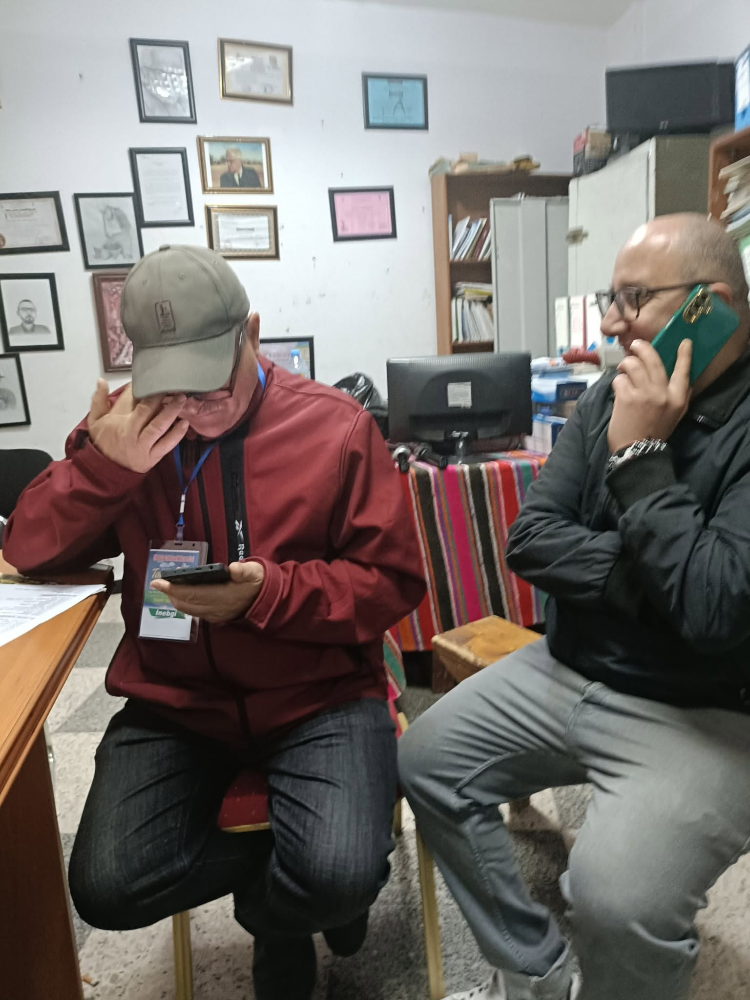

Les artistes
“Imeqersa” (Les déchirés)
Ces fous qui réveillent
les consciences,
Errants dans la nuit
des regards endormis.
Ils marchent à contre-temps
des évidences,
Et murmurent des vérités
que nul n’a dites.
Ils portent en eux
des tempêtes sans nom,
Des éclairs d’âme
que le monde redoute.
Leurs mots sont des pierres
lancées sans pardon,
Sur les vitres fragiles
de nos doutes.
On les dit perdus,
égarés,
trop sensibles,
Parce qu’ils voient là
où l’on détourne les yeux.
Ils touchent l’invisible,
rendent l’ombre lisible,
Et mettent à nu
ce qui dérange les cieux.
Leur folie est flamme,
leur chaos est lumière.
Ils brûlent pour que
d’autres apprennent à voir,
Dans le silence épais
des foules ordinaires.
Ils sont le cri vif
qui déchire le noir.
Mais à trop éclairer,
ils s’effacent eux-mêmes,
Consumés par l’éclat
de leur propre vérité.
Et laissent derrière eux,
comme un fragile poème,
Un monde un peu moins
prêt à se taire…
et à se fermer.
Ait Smail le 26 Mars 2026
Djamel Metref

← Tous les poèmes